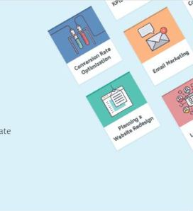

How to find, Recognize, and hire High performing Marketers
So you want that perfect hire? you are looking for an employee who is dedicated, a self starter comes up with great ideas, meets deadline, and still jives with your company culture. Everyone has told you that you are looking for an unincom, right?
Continue Reading ->"Using Messenger, Bots for lead Generation Ft.Jason Swenk" (Inbound Success)
What is the business impact of replacing contact forms with messenger bots? Jason Swenk On this week's episode of The Inbound Success Podcast, digital marketing agency advisor Jason Swenk talks about the results he got after replacing his website contact forms with ManyChat messenger bots. TL;DR - he was able to increase services revenues by 74% and achieved email click through rates of 50%, all with minimal effort and cost.
Continue Reading -> Amazing Things Happen When
MARKETINGAND SALESLEADERSIMPACT
Live Sales and Marketing Leaders Come Together
IMPACT Live 2018 is an exclusive, 2-day experience where marketing leaders grow and make valuable connections while actually having a good time.
4th of July Emails: 13 That Prove Holiday Marketing doesn't Have To Be Hard
I’m going to be honest. For the past week, I’ve been racking my brain trying to think of a fun, original 4th of July article for this year's festivities -- but I've drawn a blank. Festivals and holidays are marketing gold, but as effective at driving sales and “delighting” customers as they are, thinking of a campaign that is both unique and memorable isn’t easy.
Continue Reading ->6 Summer Must-Reads That Will Help Shape Your Career
You know what I used to hate growing up? Summer Reading. Picking up a book just for fun was and is great, but like most good things, once we were forced to do it, it lost all its charm. I have to admit though, despite the annoyance and intrusion on our summer relaxation, our teachers had good reason to assign what they did. We learned a lot (maybe with a little help from Sparknotes) and sometimes they were even genuinely fun to read. So, listen up, class...
Continue Reading ->Master the topics that matter to digital marketers the most
Get started on refine your inbound marketing strategy with the most actionable and up-to-date inbound.
6 Cool UX Careers You May Have Never Considered [Infographic]
User Experience is one of my favorite things to talk about -- if that weren’t obvious enough to those of you who have seen me and Jessie-Lee Nichols tear apart the user-submitted websites during IMPACTs Website Throwdown! Nothing excites me more than taking a deep dive into the usability and functionality of a website and, with a background in graphic and web design and years of experience as an inbound marketer, I have become quite good at understanding UX and its importance in creating a successful marketing strategy.
Continue Reading ->Creative Problem-Solving and Knowing When It's Time to Ask for Help [Interview]
If working in the agency world has taught me anything, its that you are going to be presented with some pretty challenging problems and you need to face them head-on. But finding the solution to those problems isn't always the easiest, and it can feel pretty aggravating when you just can't solve them.
Continue Reading ->How Compassion Can Transform Your Workplace [TED Talk Video]
I’ve always considered myself a generally happy person and, pun not intended, I’m glad. We talk about this at IMPACT quite a bit; ow a person’s mood can really affect the team around them and we take it very seriously. If there’s something bothering you that’s work-related, talk to the proper person. If it’s personal, work from home or take some time off. Even with this culture, I never considered the fact that you can actually measure someone’s overall happiness.
Continue Reading ->